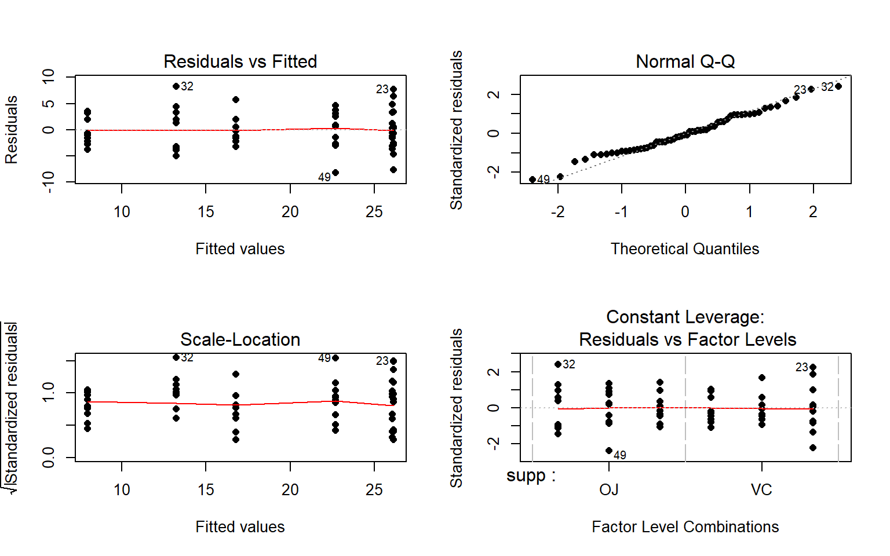

Chapter 4 Two-Way ANOVA
4.1 Situation
In this chapter, we extend the One-Way ANOVA to situations with two factors or categorical explanatory variables in a method that is generally called the Two-Way ANOVA . This allows researchers to simultaneously study more than one variable that might explain variability in the responses and explore whether the impacts of one variable change depending on the other variable. In some situations, each observation is so expensive that researchers want to use a single study to explore two different sets of research questions in the same round of data collection. For example, a company might want to study factors that affect the number of defective products per day and are interested in the impacts of two different types of training programs and three different levels of production quotas. These methods would allow engineers to compare the training programs, production quotas, and see if the training programs work differently for different production quotas. In a clinical trials context, it is well known that certain factors can change the performance of certain drugs. For example, different dosages of a drug might have different benefits or side-effects on men, versus women or children. When the impact of one factor changes on the level of another factor, we say that they interact. It is also possible for both factors to be related to differences in the mean responses and not interact. For example, suppose there is a difference in the response means between men and women and a difference among various dosages, but the effect of increasing the dosage is the same for the male and female subjects. This is an example of what is called an additive type of model. In general, the world is more complicated than the single factor models we considered in Chapter 3 can account for, especially in observational studies, so these models allow us to start to handle more realistic situations.
Consider the following “experiment” where we want to compare the strength of different brands of paper towels when they are wet. The response variable will be the time to failure in seconds (a continuous response variable) when a weight is placed on the towel held at the four corners. We are interested in studying the differences between brands and the impact of different amounts of water applied to the towels.
Predictors (Explanatory Variables): A :
Brand(2 brands of interest, named B1 and B2) and B : Number ofDropsof water (10, 20, 30 drops).Response: Time to failure (in seconds) of a towel (\(y\)) with a weight sitting in the middle of the towel.
4.2 Designing a two-way experiment and visualizing results
Ideally, we want to randomly assign the levels of each factor so that we can attribute causality to any detected effects and to reduce the chances of confounding. Because there are two factors, we would need to design a random assignment scheme to select the levels of both variables. For example, we could randomly select a brand and then randomly select the number of drops to apply from the levels chosen for each measurement. Or we could decide on how many observations we want at each combination of the two factors (ideally having them all equal so the design is balanced) and then randomize the order of applying the different combinations of levels.
Why might it be important to randomly apply the brand and number of drops in an experiment? There are situations where the order of observations can be related to changes in the responses and we want to be able to eliminate the order of observations from being related to the levels of the factors. For example, suppose that the area where the experiment is being performed becomes wet over time and the later measurements have extra water that gets onto the paper towels and they tend to fail more quickly. If all the observations for the second brand were done later in the study, then the order of observations impacts could make the second brand look worse. If the order of observations is randomized, then even if there is some drift in the responses over the order of observations it should still be possible to see the differences in the randomly assigned effects. If the study incorporates repeated measurements on human subjects, randomizing the order of treatments they are exposed to can alleviate impacts of them “learning” through the study, something that we would not have to worry about with paper towels.
In observational studies, we do not have the luxury of random assignment, that is, we cannot randomly assign levels of the treatment variables to our subjects, so we cannot guarantee that the only difference between the groups are the explanatory variables. As discussed before, because we can’t control which level of the variables are assigned to the subjects, we cannot make causal inferences and have to worry about other variables being the real drivers of the results. Although we can never establish causal inference with observational studies, we can generalize our results to a larger population if we have a representative sample from our population of interest.
It is also possible that we might have studies where some of the variables are randomly assigned and others are not randomly assignable. The most common versions of this are what we sometimes call subject “demographics”, such as sex, income, race, etc. We might be performing a study where we can randomly assign treatments to these subjects but might also want to account for differences based on income level, which we can’t assign. In these cases, the scope of inference gets complicated – differences seen on randomized variables can be causally interpreted but you have to be careful to not say that the demographics caused differences. Suppose that a randomly assigned drug dosage is found to show differences in male patients but not in female patients. We could say that the dosage causes differences in males but does not in females. We are not saying that sex caused the differences but that the causal differences were modified by the sex of the subjects.
Even when we do have random assignment of treatments it is important to think about who/what is included in the sample. To get back to the paper towel example, we are probably interested in more than the sheets of the rolls we have to work with so if we could randomly select the studied paper towels from all paper towels made by each brand, our conclusions could be extended to those populations. That probably would not be practical, but trying to make sure that the towels are representative of all made by each brand by checking for defects and maybe picking towels from a few different rolls would be a good start to being able to extend inferences beyond the tested towels.
Once random assignment and random sampling is settled, the final aspect of study design involves deciding on the number of observations that should be made. The short (glib) answer is to take as many as you can afford. With more observations comes higher power to detect differences if they exist, which is a desired attribute of all studies. It is also important to make sure that you obtain multiple observations at each combination of the treatment levels, which are called replicates. Having replicate measurements allows estimation of the mean for each combination of the treatment levels as well as estimation and testing for an interaction. And we always prefer having balanced designs because they provide resistance to violation of some assumptions as noted in Chapter 3. A balanced design in a Two-Way ANOVA setting involves having the same sample size for every combination of the levels of the treatments.
With two categorical explanatory variables, there are now five possible scenarios for the truth. Different situations are created depending on whether there is an interaction between the two variables, whether both variables are important but do not interact, or whether either of the variables matter at all. Basically, there are five different possible outcomes in a randomized Two-Way ANOVA study, listed in order of increasing model complexity:
Neither A or B has an effect on the responses (nothing causes differences in responses).
A has an effect, B does not (only A causes differences in responses).
B has an effect, A does not (only B causes differences in responses).
Both A and B have effects on response but no interaction (A and B both cause differences in responses but the impacts are additive).
Effect of A differs based on the levels of B, the opposite is also true (means for levels of A are different for different levels of B, or, simply, A and B interact).
To illustrate these five potential outcomes, we will consider a fake version of the paper towel example. It ended up being really messy and complicated to actually perform the experiment as we described it so these data were simulated to help us understand the Two-Way ANOVA possibilities in as simple a situation as possible. The first step is to understand what has been observed (number observations at each combination of factors) and look at some summary statistics across all the “groups”. The data set is available from the course website using:
pt<-read.csv("http://www.math.montana.edu/courses/s217/documents/pt.csv")
pt$drops<-factor(pt$drops)The data set contains five observations per combination of treatment levels as provided by the tally function. To get counts for combinations of the variables, use the general formula of tally(x1~x2, data=...) although the order of x1 and x2 doesn’t matter:
require(mosaic)
tally(brand ~ drops, data=pt)## drops
## brand 10 20 30
## B1 5 5 5
## B2 5 5 5The sample sizes in each of the six treatment level combinations of Brand and Drops [(B1, 10), (B1, 20), (B1, 30), (B2, 10), (B2, 20), (B2, 30)] are \(n_{jk} = 5\) for \(j^{th}\) level of Brand (\(j=1, 2\)) and \(k^{th}\) level of Drops (\(k=1, 2, 3\)). The tally function gives us a
contingency table with \(R = 2\) rows (B1, B2) and \(C = 3\) columns (10, 20, and 30). We’ll have more fun with this sort of summary of \(R\) by \(C\) tables in Chapter 5 – here it helps us see the sample size in each combination of factor levels. The favstats function also helps us dig into the results for all combinations of factor levels. The notation involves putting both variables after the “~” with a “+” between them. In the output, the first row contains summary information for the 5 observations for Brand B1 and Drops amount 10. It also contains the sample size in the n column, although here it rolled into a new set of rows with the standard deviations.
favstats(responses ~ brand + drops, data=pt)## brand.drops min Q1 median Q3 max mean
## 1 B1.10 0.3892621 1.3158737 1.906436 2.050363 2.333138 1.599015
## 2 B2.10 2.3078095 2.8556961 3.001147 3.043846 3.050417 2.851783
## 3 B1.20 0.3838299 0.7737965 1.516424 1.808725 2.105380 1.317631
## 4 B2.20 1.1415868 1.9382142 2.066681 2.838412 3.001200 2.197219
## 5 B1.30 0.2387500 0.9804284 1.226804 1.555707 1.829617 1.166261
## 6 B2.30 0.5470565 1.1205102 1.284117 1.511692 2.106356 1.313946
## sd n missing
## 1 0.7714970 5 0
## 2 0.3140764 5 0
## 3 0.7191978 5 0
## 4 0.7509989 5 0
## 5 0.6103657 5 0
## 6 0.5686485 5 0The next step is to visually explore the results across the combinations of the two explanatory variables. The beanplot can be extended to handle these sorts of two-way situations only if one of the two variables is a two-level variable. This is a pretty serious constraint on this display, so we will show you the plot (Figure 4.1) but not focus on the code. The reason beanplots can only handle \(2 \times K\) designs is that the beans are split along a vertical line for the \(K\) levels of the other variable. In Figure 4.1, the Brand B1 density curves are shaded and the B2 curves are not. In reading these plots, look for differences in each level and whether those differences change across the levels of the other variable. Specifically, start with comparing the two brands for different amounts of water. Do the brands seem different? Certainly for 10 drops of water the two look different but not for 30 drops. We can also look for combinations of factors that produce the highest or lower responses in this display. It appears that the time to failure is highest in the low water drop groups but as the water levels increase, the time to failure falls and the differences in the two brands seem to decrease. The fake data seem to have relatively similar amounts of variability and distribution shapes – remembering that there are only 5 observations available for describing the shape of responses for each combination. These data were simulated using a normal distribution and constant variance if that gives you some extra confidence in assessing these model assumptions.
require(beanplot)
beanplot(responses ~ brand*drops, data=pt, side="b", col=list("lightblue","white"),
xlab="Drops", ylab="Time", method="jitter",log="")
legend("topright", bty="n", c("B1","B2"), fill=c("lightblue","white"))
Figure 4.1: Beanplot of paper towel data by Drops (x-axis) and Brand (side of bean, shaded area for Brand B1.
The beanplots can’t handle situations where both variables have more than two levels – we need a simpler display that just focuses on the means at the combinations of the two explanatory variables. The means for each combination of levels that you can find in the favstats output are more usefully used in what is called an interaction plot. Interaction plots display the mean responses (y-axis) versus levels of one predictor variable on the x-axis, adding points and lines for each level of the other predictor variable. Because we don’t like any of the available functions in R, we wrote our own function, called intplot that you can download using:
source("http://www.math.montana.edu/courses/s217/documents/intplot.R")The function allows a formula interface like Y~X1*X2 and provides the means \(\pm\) 1 SE (vertical bars) and adds a legend to help make everything clear.
intplot(responses ~ brand*drops, data=pt)
Figure 4.2: Interaction plot of the paper towel data with Drops on the x-axis.
Interaction plots can always be made two different ways by switching the order of the variables. Figure 4.2 contains Drops on the x-axis and Figure 4.3 has Brand on the x-axis. Typically putting the variable with more levels on the x-axis will make interpretation easier, but not always. Try both and decide on the one that you like best.
intplot(responses ~ drops*brand, data=pt)
Figure 4.3: Interaction plot of paper towel data with Brand on the x-axis.
The formula in this function builds on our previous notation and now we include both predictor variables with an “*" between them. Using an asterisk between explanatory variables is one way of telling R to include an interaction between the variables. While the interaction may or may not be present, the interaction plot helps us to explore those potential differences.
There are a variety of aspects of the interaction plots to pay attention to. Initially, the question to answer is whether it appears that there is an interaction between the predictor variables. When there is an interaction, you will see non-parallel lines in the interaction plot. You want to look from left to right in the plot and assess whether the lines are close to parallel, relative to the amount of variability in the means. If it seems that there is clear visual evidence of non-parallel lines, then the interaction is likely worth considering (we will typically use a hypothesis test to formally assess this – see discussion below). If the lines look to be close to parallel, then there probably isn’t an interaction between the variables. Without an interaction present, that means that the differences across levels of one variable doesn’t change based on the levels of the other variable and vice-versa. This means that we can consider the main effects of each variable on their own43. Main effects are much like the results we found in Chapter 3 where we can compare means across levels of a single variable except that there are results for two variables to extract from the model. With the presence of an interaction, it is complicated to summarize how each variable is affecting the response variable because their impacts change depending on the level of the other factor. And plots like the interaction plot provide us much useful information.
If the lines are not parallel, then focus in on comparing the levels of one variable as the other variable changes. Remember that the definition of an interaction is that the differences among levels of one variable depends on the level of the other variable being considered. “Visually” this means comparing the size of the differences in the lines from left to right. In Figures 4.2 and 4.3, the effect of amount of water changes based on the brand being considered. In Figure 4.3, the three lines represent the three water levels. The difference between the brands (left to right, B1 to B2) is different depending on how much water was present. It appears that Brand B2 lasted longer at the lower water levels but that the difference between the two brands dropped as the water levels increased. The same story appears in Figure 4.2. As the water levels increase (left to right, 10 to 20 to 30 drops), the differences between the two brands decrease. Of the two versions, Figure 4.2 is probably easier to read here. The interaction plots also are useful for identifying the best and worst mean responses for combinations of the treatment levels. For example, 10 Drops and Brand B2 lasts longest, on average, and 30 Drops with Brand B1 fails fastest, on average. In this situation, the lines do not appear to be parallel suggesting that further exploration of the interaction appears to be warranted.
Before we get to the hypothesis tests to formally make this assessment (you knew some sort of p-value was coming, right?), we can visualize the 5 different scenarios that could characterize the sorts of results you could observe in a Two-Way ANOVA situation. Figure 4.4 shows 4 of the 5 scenarios. In panel (a), when there are no differences from either variable (Scenario 1), it provides relatively parallel lines and basically no differences either across Drops levels (x-axis) or Brand (lines). This would result in no evidence related to a difference in brands, water levels, or any interaction between them.
Figure 4.4: Interaction plots of four possible scenarios in the paper towel study.
Scenario 2 (Figure 4.4 panel (b)) incorporates differences based on factor A (here that is Brand) but no real difference based on the Drops or any interaction. This results in a clear shift between the little to no changes in the level of those lines across water levels. These lines are relatively parallel. We can see that Brand B2 is better than Brand B1 but that is all we can show with these sorts of results.
Scenario 3 (Figure 4.4 panel (c)) flips the important variable to B (Drops) and shows decreasing average times as the water levels increase. Again, the interaction panels show near parallel-ness in the lines and really just show differences among the levels of the water. In both Scenarios 2 and 3, we could use a single variable and drop the other from the model, getting back to a One-Way ANOVA model, without losing any important information.
Scenario 4 (Figure 4.4 panel (d)) incorporates effects of A and B, but they are additive. That means that the effect of one variable is the same across the levels of the other variable. In this experiment, that would mean that Drops has the same impact on performance regardless of brand and that the brands differ but each type of difference is the same regardless of levels of the other variable. The interaction plot lines are more or less parallel but now the brands are clearly different from each other. The plot shows the decrease in performance based on increasing water levels and that Brand B2 is better than Brand B1. Additive effects show the same difference in lines from left to right in the interaction plots.
Finally, Scenario 5 (Figure 4.5) involves an interaction between the two variables (Drops and Brand). There are many ways that interactions can present but the main thing is to look for clearly non-parallel lines. As noted in the previous discussion, the Drops effect appears to change depending on which level of Brand is being considered. Note that the plot here described as Scenario 5 is the same as the initial plot of the results in Figure 4.2.
Figure 4.5: Interaction plot of Scenario 5 where it appears that an interaction is present.
The typical modeling protocol is to start with assuming that Scenario 5 is a possible description of the results, related to fitting what is called the interaction model, and then attempt to simplify the model (to the additive model) if warranted. We need a hypothesis test to help decide if the interaction is “real” – if there is sufficient evidence to prove that there is an interaction. We need a test because the lines will never be exactly parallel and, just like in the One-Way ANOVA situation, the amount of variation around the lines impacts the ability of the model to detect differences, in this case of an interaction.
4.3 Two-Way ANOVA models and hypothesis tests
To assess interactions with two variables, we need to fully describe models for the additive and interaction scenarios and then develop a method for assessing evidence of the need for different aspects of the models. First, we need to define the notation for these models:
\(y_{ijk}\) is the \(i^{th}\) response from the group for level \(j\) of factor A and level \(k\) of factor B
\(j=1,\ldots,J\) \(J\) is the number of levels of A
\(k=1,\ldots,K\) \(K\) is the number of levels of B
\(i=1,\ldots,n_{jk}\) \(n_{jk}\) is the sample size for level \(j\) of factor A and level \(k\) of factor B
\(N=\Sigma\Sigma n_{jk}\) is the total sample size (sum of the number of observations across all \(JK\) groups)
We need to extend our previous discussion of reference-coded models to develop a Two-Way ANOVA model. We start with the Two-Way ANOVA interaction model:
\[y_{ijk} = \alpha + \tau_j + \gamma_k + \omega_{jk} + \epsilon_{ijk},\]
where \(\alpha\) is the baseline group mean (for level 1 of A and level 1 of B), \(\tau_j\) is the deviation for the main effect of A from the baseline for levels \(2,\ldots,J\), \(\gamma_k\) (gamma \(k\)) is the deviation for the main effect of B from the baseline for levels \(2,\ldots,K\), and \(\omega_{jk}\) (omega \(jk\)) is the adjustment for the interaction effect for level \(j\) of factor A and level \(k\) of factor B for \(j=1,\ldots,J\) and \(k=1,\ldots,K\). In this model, \(\tau_1\), \(\gamma_1\), and \(\omega_{11}\) are all fixed at 0. As in Chapter 3, R will choose the baseline categories alphabetically but now it is choosing a baseline for both variables and so our detective work will be doubled to sort this out.
If the interaction term is not important, based on the interaction test presented below, the \(\omega_{jk}\text{'s}\) can be dropped from the model and we get a model that corresponds to Scenario 4 above. Scenario 4 is where there are two main effects but no interaction between them. The additive Two-Way model is
\[y_{ijk} = \alpha + \tau_j + \gamma_k + \epsilon_{ijk},\]
where each component is defined as in the interaction model. The difference between the interaction and additive models is setting all the \(\omega_{jk}\text{'s}\) to 0 that are present in the interaction model. When we set parameters to 0 in models it removes them from the model. Setting parameters to 0 is how we will develop our hypotheses to test for an interaction, by testing whether there is evidence enough to reject that all \(\omega_{jk}\text{'s}=0\).
The interaction test hypotheses are
\(H_0\): No interaction between A and B in population \(\Leftrightarrow\) All \(\omega_{jk}\text{'s}=0\).
\(H_A\): Interaction between A and B in population \(\Leftrightarrow\) At least one \(\omega_{jk}\ne 0\)
To perform this test, a new ANOVA \(F\)-test is required (presented below) but there are also hypotheses relating to the main effects of A (\(\tau_j\text{'s}\)) and B (\(\gamma_k\text{'s}\)). If evidence is found to reject the null hypothesis that no interaction is present, then it is dangerous to ignore it and test for the main effects because important main effects can be masked by interactions (examples later). It is important to note that, by definition, both variables matter if an interaction is found to be important so the main effect tests may not be very interesting. If the interaction is found to be important based on the test and retained in the model, you should focus on the interaction model (also called the full model) in order to understand and describe the form of the interaction among the variables.
If the interaction test does not return a small p-value, then we have no evidence to suggest that it is needed and it can be dropped from the model. In this situation, we would re-fit the model and focus on the results provided by the additive model – performing tests for the two additive main effects. For the first, but not last time, we encounter a model with more than one variable and test of potential interest. In models with multiple variables at similar levels (here both are main effects), we are interested in the results for each variable given that the other variable is in the model. In many situations, including more than one variable in a model changes the results for the other variable even if those variables do not interact. The reason for this is more clear in Chapter 8 and really only matters here if we have unbalanced designs, but we need to start adding a short modifier to our discussions of main effects – they are the results conditional on or adjusting for or, simply, given, the other variable(s) in the model. Specifically, the hypotheses for the two main effects are:
Main effect test for A:
\(H_0\): No differences in means across levels of A in population, given B in the model \(\Leftrightarrow\) All \(\tau_j\text{'s} = 0\) in additive model.
\(H_A\): Some difference in means across levels A in population, given B in the model \(\Leftrightarrow\) At least one \(\tau_j \ne 0\), in additive model.
Main effect test for B:
\(H_0\): No differences in means across levels of B in population, given A in the model \(\Leftrightarrow\) All \(\gamma_k\text{'s} = 0\) in additive model.
\(H_A\): Some difference in means across levels B in population, given A in the model \(\Leftrightarrow\) At least one \(\gamma_k \ne 0\), in additive model.
In order to test these effects (interaction in the interaction model and main effects in the additive model), \(F\)-tests are developed using Sums of Squares, Mean Squares, and degrees of freedom similar to those in Chapter 3. We won’t worry about the details of the sums of squares formulas but you should remember the sums of squares decomposition, which still applies44. Table 4.1 summarizes the ANOVA results you will obtain for the interaction model and Table 4.2 provides the similar general results for the additive model. As we saw in Chapter 3, the degrees of freedom are the amount of information that is free to vary at a particular level and that rule generally holds here. For example, for factor A with \(J\) levels, there are \(J-1\) parameters that are free since the baseline is fixed. The residual degrees of freedom for both models are not as easily explained but have simple formula. Note that the sum of the degrees of freedom from the main effects, (interaction if present), and error need to equal \(N-1\), just like in the One-Way ANOVA table.
| Source | DF | SS | MS | F-statistics |
|---|---|---|---|---|
| A | \(J-1\) | \(\text{SS}_A\) | \(\text{MS}_A=\text{SS}_A/\text{df}_A\) | \(\text{MS}_A/\text{MS}_E\) |
| B | \(K-1\) | \(\text{SS}_B\) | \(\text{MS}_B=\text{SS}_B/\text{df}_B\) | \(\text{MS}_B/\text{MS}_E\) |
| A:B (interaction) | \((J-1)(K-1)\) | \(\text{SS}_{AB}\) | \(\text{MS}_{AB}=\text{SS}_{AB}/\text{df}_{AB}\) | \(\text{MS}_{AB}/\text{MS}_E\) |
| Error | \(N-J-K+1\) | \(\text{SS}_E\) | \(\text{MS}_E=\text{SS}_E/\text{df}_E\) | |
| Total | \(\color{red}{\mathbf{N-1}}\) | \(\color{red}{\textbf{SS}_{\textbf{Total}}}\) |
| Source | DF | SS | MS | F-statistics |
|---|---|---|---|---|
| A | \(J-1\) | \(\text{SS}_A\) | \(\text{MS}_A=\text{SS}_A/\text{df}_A\) | \(\text{MS}_A/\text{MS}_E\) |
| B | \(K-1\) | \(\text{SS}_B\) | \(\text{MS}_B=\text{SS}_B/\text{df}_B\) | \(\text{MS}_B/\text{MS}_E\) |
| Error | \(N-J-K+1\) | \(\text{SS}_E\) | \(\text{MS}_E=\text{SS}_E/\text{df}_E\) | |
| Total | \(\color{red}{\mathbf{N-1}}\) | \(\color{red}{\textbf{SS}_{\textbf{Total}}}\) |
The mean squares are formed by taking the sums of squares (we’ll let R find those for us) and dividing by the \(df\) in the row. The \(F\)-ratios are found by taking the mean squares from the row and dividing by the mean squared error (\(\text{MS}_E\)). They follow \(F\)-distributions with numerator degrees of freedom from the row and denominator degrees of freedom from the Error row (in R output this the Residuals row). It is possible to develop permutation tests for these methods but some technical issues arise in doing permutation tests for interaction model components so we will not use them here. This means we will have to place even more emphasis on meeting the assumptions since we only have the parametric method available.
With some basic expectations about the ANOVA tables and \(F\)-statistic construction in mind, we can get to actually estimating the models and exploring the results. The first example involves the fake paper towel data displayed in Figure 4.1 and 4.2. It appeared that Scenario 5 was the correct story since the lines were not parallel, but we need to know whether there is evidence to suggest that the interaction is “real” and we get that through the interaction hypothesis test. To fit the interaction model using lm, the general formulation is lm(y ~ x1*x2, data=...). The order of the variables doesn’t matter and the most important part of the model, to start with, relates to the interaction of the variables. The ANOVA table output shows the results for the interaction model obtained by running the anova function on the model called m1. Specifically, the test that \(H_0: \text{ All } \omega_{jk}\text{'s} = 0\) has a test statistic of \(F(2,24)=1.92\) (in bold in the output from the row with brands:drops) and a p-value of 0.17. So there is insufficient evidence to reject the null hypothesis of no interaction, with a 17% chance we would observe a difference in the \(\omega_{jk}\text{'s}\) like we did or more extreme if the \(\omega_{jk}\text{'s}\) really were all 0. For the interaction model components, R presents them with a colon, :, between the variable names.
m1<-lm(responses ~ brand*drops, data=pt)
anova(m1)## Analysis of Variance Table
##
## Response: responses
## Df Sum Sq Mean Sq F value Pr(>F)
## brand 1 4.3322 4.3322 10.5192 0.003458 **
## drops 2 4.8581 2.4290 5.8981 0.008251 **
## brand:drops 2 1.5801 0.7901 1.9184 0.168695
## Residuals 24 9.8840 0.4118
## ---
## Signif. codes: 0 '***' 0.001 '**' 0.01 '*' 0.05 '.' 0.1 ' ' 1| Df | Sum Sq | Mean Sq | F value | Pr(>F) | |
|---|---|---|---|---|---|
| brand | 1 | 4.332 | 4.332 | 10.52 | 0.003458 |
| drops | 2 | 4.858 | 2.429 | 5.898 | 0.008251 |
| brand:drops | 2 | 1.58 | 0.7901 | 1.918 | 0.1687 |
| Residuals | 24 | 9.884 | 0.4118 | NA | NA |
It is useful to display the estimates from this model and we can utilize plot(allEffects(modelname)) to visualize the results for the terms in our models. If we turn on the options for grid=T, multiline=T, and ci. style="bars" we will get a more useful version of the basic “effect plot” for Two-Way ANOVA models with interaction. The results of the estimated interaction model are displayed in Figure 4.6, which looks very similar to our previous interaction plot. The only difference is that this comes from model that assumes equal variance and these plots show 95% confidence intervals for the means instead of the 1 standard error used above.
require(effects)
plot(allEffects(m1), grid=T, multiline=T, ci.style="bars")Figure 4.6: Plot of estimated results of interaction model.
In the absence of evidence to include the interaction, the model should be simplified to the additive model and the interpretation focused on each main effect, conditional on having the other variable in the model. To fit an additive model and not include an interaction, the model formula involves a “+” instead of a “*" between the explanatory variables.
m2<-lm(responses ~ brand + drops, data=pt)
anova(m2)## Analysis of Variance Table
##
## Response: responses
## Df Sum Sq Mean Sq F value Pr(>F)
## brand 1 4.3322 4.3322 9.8251 0.004236 **
## drops 2 4.8581 2.4290 5.5089 0.010123 *
## Residuals 26 11.4641 0.4409
## ---
## Signif. codes: 0 '***' 0.001 '**' 0.01 '*' 0.05 '.' 0.1 ' ' 1The p-values for the main effects of brand and drops change slightly from the results in the interaction model due to changes in the \(\text{MS}_E\) from 0.4118 to 0.4409 (more variability is left over in the simpler model) and the \(\text{DF}_{\text{error}}\) that increases from 24 to 26. In both models, the \(\text{SS}_{\text{Total}}\) is the same (20.6544). In the interaction model,
\[\begin{array}{rl} \text{SS}_{\text{Total}} & = \text{SS}_{\text{brand}} + \text{SS}_{\text{drops}} + \text{SS}_{\text{brand:drops}} + \text{SS}_{\text{E}}\\ & = 4.3322 + 4.8581 + 1.5801 + 9.8840\\ & = 20.6544\\ \end{array}\]
In the additive model, the variability that was attributed to the interaction term in the interaction model (\(\text{SS}_{\text{brand:drops}} = 1.5801\)) is pushed into the \(\text{SS}_{\text{E}}\), which increases from 9.884 to 11.4641. The sums of squares decomposition in the additive model is
\[\begin{array}{rl} \text{SS}_{\text{Total}} & = \text{SS}_{\text{brand}} + \text{SS}_{\text{drops}} + \text{SS}_{\text{E}} \\ & = 4.3322 + 4.8581 + 11.4641 \\ & = 20.6544 \\ \end{array}\]
This shows that the sums of squares decomposition applies in these more complicated models as it did in the One-Way ANOVA. It also shows that if the interaction is removed from the model, that variability is lumped in with the other unexplained variability that goes in the \(\text{SS}_{\text{E}}\) in any model.
The fact that the sums of squares decomposition can be applied here is useful, except that there is a small issue with the main effect tests in the ANOVA table results that follow this decomposition when the design is not balanced. It ends up that the tests in a typical ANOVA table are only conditional on the tests higher up in the table. For example, in the additive model ANOVA table, the Brand test is not conditional on the Drops effect, but the Drops effect is conditional on the Brand effect. To fix this issue, we have to use another type of sums of squares, called Type II sums of squares. They will no longer always follow the rules of the sums of squares decomposition but they will test the desired hypotheses. Specifically, they provide each test conditional on any other terms at the same level of the model and match the hypotheses written out earlier in this section. To get the “correct” ANOVA results, the car (Fox and Weisberg, 2011) package is required. We use the Anova function on our linear models from here forward to get the “right” tests in our ANOVA tables. Note how the case-sensitive nature of R code shows up in the use of the capital-A Anova function instead of the anova function used previously. In this case, because the design was balanced, the results are the same using either function. Observational studies rarely generate balanced designs (some designed studies can result in unbalanced designs) so we will generally just use the Type II version of the sums of squares. The Anova results using the Type II sums of squares are slightly more conservative than the results from anova, which are called Type I sums of squares. The sums of squares decomposition no longer can be applied, but it is a small sacrifice to get each test after adjusting for all other variables45.
require(car)
Anova(m2)## Anova Table (Type II tests)
##
## Response: responses
## Sum Sq Df F value Pr(>F)
## brand 4.3322 1 9.8251 0.004236 **
## drops 4.8581 2 5.5089 0.010123 *
## Residuals 11.4641 26
## ---
## Signif. codes: 0 '***' 0.001 '**' 0.01 '*' 0.05 '.' 0.1 ' ' 1The new output switches the columns around and doesn’t show you the mean squares, but gives the most critical parts of the output. Here, there is no change in results because it is balanced design with equal counts of responses in each combination of the two explanatory variables.
The additive model, when appropriate, provides simpler interpretations for each explanatory variable compared to models with interactions because the effect of one variable is the same regardless of the levels of the other variable and vice versa. There are two tools to aid in understanding the impacts of the two variables in the additive model. First, the model summary provides estimated coefficients with interpretations like those seen in Chapter 3 (deviation of group \(j\) or \(k\) from the baseline group’s mean), except with the additional wording of “controlling for” the other variable added to any of the discussion. Second, the term-plots now show each main effect and how the groups differ with one panel for each of the two explanatory variables in the model. These term-plots are created by holding the other variable constant at one of its levels.
summary(m2)##
## Call:
## lm(formula = responses ~ brand + drops, data = pt)
##
## Residuals:
## Min 1Q Median 3Q Max
## -1.4561 -0.4587 0.1297 0.4434 0.9695
##
## Coefficients:
## Estimate Std. Error t value Pr(>|t|)
## (Intercept) 1.8454 0.2425 7.611 4.45e-08 ***
## brandB2 0.7600 0.2425 3.134 0.00424 **
## drops20 -0.4680 0.2970 -1.576 0.12715
## drops30 -0.9853 0.2970 -3.318 0.00269 **
## ---
## Signif. codes: 0 '***' 0.001 '**' 0.01 '*' 0.05 '.' 0.1 ' ' 1
##
## Residual standard error: 0.664 on 26 degrees of freedom
## Multiple R-squared: 0.445, Adjusted R-squared: 0.3809
## F-statistic: 6.948 on 3 and 26 DF, p-value: 0.001381In the model summary, the baseline combination estimated in the (Intercept) row is for Brand B1 and Drops 10 and estimates the mean failure time as 1.85 seconds for this combination. As before, the group labels that do not show up are the baseline but there are two variables’ baselines to identify. Now the “simple” aspects of the additive model show up. The interpretation of the Brands B2 coefficient is as a deviation from the baseline but it applies regardless of the level of Drops. Any difference between B1 and B2 involves a shift up of 0.76 seconds in the estimated mean failure time. Similarly, going from 10 (baseline) to 20 drops results in a drop in the estimated failure mean of 0.47 seconds and going from 10 to 30 drops results in a drop of almost 1 second in the average time to failure, both estimated changes are the same regardless of the brand of paper towel being considered. Sometimes, especially in observational studies, we use the terminology “controlled for” to remind the reader that the other variable was present in the model46 and also explained some of the variability in the responses. The term-plots for the additive model (Figure 4.7) help us visualize the impacts of changes brand and changing water levels, holding the other variable constant. The differences in heights in each panel correspond to the coefficients just discussed.
require(effects)
plot(allEffects(m2))Figure 4.7: Term-plots of additive model for paper towel data. Left panel displays results for two brands and right panel for number of drops of water, each after controlling for the other.
4.4 Guinea pig tooth growth analysis with Two-Way ANOVA
The effects of dosage and delivery method of ascorbic acid on Guinea Pig odontoblast growth was analyzed as a One-Way ANOVA in Section 3.4 by assessing evidence of any difference in the means of any combinations of dosage method (Vit C capsule vs Orange Juice) and three dosage amounts (0.5, 1, and 2 mg/day). Now we will consider the dosage and delivery methods as two separate variables and explore their potential interaction. A beanplot and interaction plot are provided in Figure 4.8.
data(ToothGrowth)
par(mfrow=c(1,2))
beanplot(len ~ supp*dose, data=ToothGrowth, side="b", ylim=c(-5,40),
main="Beanplot", col=list("white","orange"), xlab="Dosage",
ylab="Tooth Growth")
legend("topright", bty="n", c("VC","OJ"), fill=c("white","orange"))
intplot(len ~ supp*dose, data=ToothGrowth, col=c(1,2),
main="Interaction Plot", ylim=c(-5,40))Figure 4.8: Beanplot and interaction plot of the tooth growth data set.
It appears that the effect of method changes based on the dosage as the interaction plot seems to show some evidence of non-parallel lines. Actually, it appears that the effect of delivery method is parallel for doses 0.5 and 1.0 mg/day but that the effect of delivery method changes for 2 mg/day.
We can use the ANOVA \(F\)-test for an interaction to assess whether the interaction is “real” relative to the variability in the responses. That is, is it larger than we would expect due to natural variation in the data? If yes, then it is a real effect and we should account for it. The following results fit the interaction model and provide an ANOVA table.
TG1 <- lm(len~supp*dose,data=ToothGrowth)
Anova(TG1)## Anova Table (Type II tests)
##
## Response: len
## Sum Sq Df F value Pr(>F)
## supp 205.35 1 12.3170 0.0008936 ***
## dose 2224.30 1 133.4151 < 2.2e-16 ***
## supp:dose 88.92 1 5.3335 0.0246314 *
## Residuals 933.63 56
## ---
## Signif. codes: 0 '***' 0.001 '**' 0.01 '*' 0.05 '.' 0.1 ' ' 1The R output is reporting an interaction test result of \(F(1,56)=5.3\) with a p-value of 0.025. But this should raise a red flag since the numerator degrees of freedom are not what we should expect of \((K-1)*(J-1) = (2-1)*(3-1)=2\). This brings up an issue in R when working with categorical variables. If the levels of a categorical variable are entered numerically, R will treat them as quantitative variables and not split out the different levels of the categorical variable. To make sure that R treats categorical variables the correct way, we should use the factor function on any variables that are categorical but are coded numerically in the data set. The following code creates a new variable called dosef using the function that will help us obtain correct results from the linear model. The re-run of the ANOVA table provides the correct analysis and the expected \(df\) for the two rows of output involving dosef:
ToothGrowth$dosef<-factor(ToothGrowth$dose)
TG2 <- lm(len ~ supp*dosef, data=ToothGrowth)
Anova(TG2)## Anova Table (Type II tests)
##
## Response: len
## Sum Sq Df F value Pr(>F)
## supp 205.35 1 15.572 0.0002312 ***
## dosef 2426.43 2 92.000 < 2.2e-16 ***
## supp:dosef 108.32 2 4.107 0.0218603 *
## Residuals 712.11 54
## ---
## Signif. codes: 0 '***' 0.001 '**' 0.01 '*' 0.05 '.' 0.1 ' ' 1The ANOVA \(F\)-test for an interaction between supplement type and dosage level is \(F(2,54)= 4.107\) with a p-value of 0.022. So there appears to be enough evidence to reject the null hypothesis of no interaction between Dosage and Delivery method, supporting a changing effect on tooth growth of dosage based on the delivery method in the Guinea Pigs that were assigned.
Any similarities between this correct result and the previous WRONG result are coincidence. I (Greenwood) once attended a Master’s defense where the results from a similar model were not as expected (small p-values in places they didn’t expect and large p-values in places where they thought differences existed). During the presentation, the student showed some ANOVA tables and the four level categorical variable had 1 numerator \(df\) in the ANOVA table. The student passed with major revisions but had to re-run all the results and re-write all of the conclusions… So be careful to check the ANOVA results (\(df\) and for the right number of expected model coefficients) to make sure they match your expectations. This is one reason why you will be learning to fill in ANOVA tables based on information about the study so that you can be prepared to detect when your code has let you down47. It is also a great reason to explore term-plots and coefficient interpretations as that can also help diagnose errors in model construction.
Getting back to the previous results, we now have enough background information to more formally write up a focused interpretation of these results. The 6+ hypothesis testing steps in this situation would be focused on first identifying that the best analysis here is as a Two-Way ANOVA situation (these data were analyzed in Chapter 3 as a One-Way ANOVA but this version is better because it can explore whether there is an interaction between delivery method and dosage). We will use a 5% significance level and start with assessing the evidence for an interaction. If the interaction had not been dropped, we would have reported the test for the interaction, re-fit the additive model and used it to explore the main effect tests and estimates for Dose and Delivery method.
Hypotheses:
- \(H_0\): No interaction between Delivery method and Dose on odontoblast growth in population of guinea pigs
\(\Leftrightarrow\) All \(\omega_{jk}\text{'s}=0\).
- \(H_A\): Interaction between Delivery method and Dose on odontoblast growth in population of guinea pigs
\(\Leftrightarrow\) At least one \(\omega_{jk}\ne 0\).
Validity conditions:
Independence:
- This assumption is presumed to be met because we don’t know of a reason why the independence of the measurements of tooth growth of the guinea pigs as studied might be violated.
Constant variance:
To assess this assumption, we can use the diagnostic plots in Figure 4.9.
In the Residuals vs Fitted and the Scale-Location plots, the differences in variability among the groups (see the different x-axis positions for each group’s fitted values) is minor, so there is not strong evidence of a problem with the equal variance assumption.
par(mfrow=c(2,2)) plot(TG2, pch=16)Figure 4.9: Diagnostic plots for the interaction model for Tooth Growth.
Normality of residuals:
- The QQ-Plot in Figure 4.9 does not suggest a problem with this assumption.
Calculate the test statistic for the Interaction test.
TG2 <- lm(len ~ supp*dosef, data=ToothGrowth) Anova(TG2)## Anova Table (Type II tests) ## ## Response: len ## Sum Sq Df F value Pr(>F) ## supp 205.35 1 15.572 0.0002312 *** ## dosef 2426.43 2 92.000 < 2.2e-16 *** ## supp:dosef 108.32 2 4.107 0.0218603 * ## Residuals 712.11 54 ## --- ## Signif. codes: 0 '***' 0.001 '**' 0.01 '*' 0.05 '.' 0.1 ' ' 1- The test statistic is \(F(2,54)=4.107\).
Find the p-value:
The ANOVA \(F\)-test p-value of 0.0219 for the interaction.
To find this p-value directly in R, we can use the
pffunction.
pf(4.107, df1=2, df2=54, lower.tail=F)## [1] 0.0218601Make a decision:
- Reject \(H_0\) since the p-value (0.0219) is less than 0.05. With a p-value of 0.0219, there is about a 2.19% chance we would observe interaction like we did (or more extreme) if none were truly present. This provides strong evidence against the null hypothesis of no interaction between delivery method and dosage on odontoblast growth so we reject the null hypothesis of no interaction.
Write a conclusion:
- Therefore, the effects of dosage level (0.5, 1, or 2 mg/day) on population average tooth odontoblast growth rates of Guinea pigs are changed by the delivery (OJ, Vitamin C) method (and vice versa) and we should keep the interaction in the model. With the random assignment of levels but not random selection of subjects here, we could also write this as: Different dosage levels cause different changes in the odontoblast growth based on the delivery method for these guinea pigs.
In a Two-Way ANOVA, we need to go a little further to get to the final interpretations since the models are more complicated. When there is an interaction present, we should focus on the interaction plot or term-plot of the interaction model for an interpretation of the form and pattern of the interaction. If the interaction were unimportant, then the hypotheses and results should focus on the additive model results, especially the estimated model coefficients. To see why we don’t spend much time with the estimated model coefficients in an interaction model, the model summary for this model is provided:
summary(TG2)##
## Call:
## lm(formula = len ~ supp * dosef, data = ToothGrowth)
##
## Residuals:
## Min 1Q Median 3Q Max
## -8.20 -2.72 -0.27 2.65 8.27
##
## Coefficients:
## Estimate Std. Error t value Pr(>|t|)
## (Intercept) 13.230 1.148 11.521 3.60e-16 ***
## suppVC -5.250 1.624 -3.233 0.00209 **
## dosef1 9.470 1.624 5.831 3.18e-07 ***
## dosef2 12.830 1.624 7.900 1.43e-10 ***
## suppVC:dosef1 -0.680 2.297 -0.296 0.76831
## suppVC:dosef2 5.330 2.297 2.321 0.02411 *
## ---
## Signif. codes: 0 '***' 0.001 '**' 0.01 '*' 0.05 '.' 0.1 ' ' 1
##
## Residual standard error: 3.631 on 54 degrees of freedom
## Multiple R-squared: 0.7937, Adjusted R-squared: 0.7746
## F-statistic: 41.56 on 5 and 54 DF, p-value: < 2.2e-16There are two \(\omega_{jk}\text{'s}\) in the results, related to modifying the estimates for doses of 1 (-0.68) and 2 (5.33) for the Vitamin C group. If you want to re-construct the fitted values from the model that are displayed in the Figure 4.10, you have to look for any coefficients that are “turned on” for a combination of levels of interest. For example, for the OJ group (solid line in Figure 4.10), the dosage of 0.5 mg/day has an estimate of an average growth of approximately 13 mm. This is the baseline group, so the model estimate for an observation in the OJ and 0.5 mg/day dosage is simply \(\hat{y}_{i,\text{OJ},0.5mg}=\hat{\alpha}=13.23\) microns. For the OJ and 2 mg dosage estimate that has a value over 25 microns in the plot, the model incorporates the deviation for the 2 mg dosage: \(\hat{y}_{i,\text{OJ},2mg}=\hat{\alpha} + \hat{\tau}_{2mg}=13.23 + 12.83 = 26.06\) microns. For the Vitamin C group, another coefficient becomes involved from its “main effect”. For the VC and 0.5 mg dosage level, the estimate is approximately 8 microns. The pertinent model components are \(\hat{y}_{i,\text{VC},0.5mg}=\hat{\alpha} + \hat{\gamma}_{\text{VC}}=13.23 + (-5.25) = 7.98\) microns. Finally, when we consider non-baseline results for both groups, three coefficients are required to reconstruct the results in the plot. For example, the estimate for the VC, 1 mg dosage is \(\hat{y}_{i,\text{VC},1mg}=\hat{\alpha} + \hat{\tau}_{1mg} + \hat{\gamma}_{\text{VC}} =13.23 + 9.47 + (-5.25) = 17.45\) microns. We usually will by-pass all this fun(!) with the coefficients in an interaction model and go from the ANOVA interaction test to focusing on the pattern of the responses in the interaction plot, but it is good to know that there are still model coefficients driving our results.
plot(allEffects(TG2), grid=T, multiline=T, ci.style="bars")Figure 4.10: Term-plot for the estimated interaction for the Tooth Growth data.
Given the presence of an important interaction, then the final step in the interpretation here is to interpret the results in the interaction plot or term-plot of the interaction model, supported by the p-value suggesting evidence of a different effect of supplement type based on the dosage level. To supplement this even more, knowing which combinations of levels differ can enhance our discussion. Tukey’s HSD results (specifically the CLD) can be added to the original interaction plot by turning on the cld=T option in the intplot function as seen in Figure 4.11. Sometimes it is hard to see the letters and so there is also a cldshift=... option to move the letters up or down, here a value of 1 seemed to work.
intplot(len ~ supp*dose, data=ToothGrowth, col=c(1,2), cldshift=1,
cld=T, main="Interaction Plot with CLD")Figure 4.11: Interaction plot with added CLD from Tukey’s HSD.
The interpretation of the previous hypothesis test result can be concluded with the following discussion. Generally increasing the dosage increases the amount of mean growth except for the 2 mg/day dosage level where the increase levels off in the OJ group (OJ 1 and 2 mg/day are not detectably different) and the differences between the two delivery methods disappear at the highest dosage level. But for 0.5 and 1 mg/day dosages, OJ is clearly better than VC by about 10 microns of growth on average.
4.5 Observational study example: The Psychology of Debt
In this section, the analysis of a survey of \(N=464\) randomly sampled adults will be analyzed from a survey conducted by Lee, Webley, and Walker (1995) and available in the debt data set from the faraway package (Faraway, 2016). The subjects responded to a variety of questions including whether they buy cigarettes (cigbuy: 0 if no, 1 if yes), their housing situation (house: 1 = rent, 2 = mortgage, and 3 = owned outright), their income group (incomegp: 1 = lowest, 5 = highest), and their score on a continuous scale of attitudes about debt (prodebt: 1 = least favorable, 5 = most favorable). prodebt was derived as the average of a series of questions about debt with each question measured on an ordinal 1 to 5 scale, with higher values corresponding to more positive responses about going into debt of various kinds. The ordered scale on surveys that try to elicit your opinions on topics with scales from 1 to 5 or 1 to 7 or even, sometimes, 1 to 10 is called a Likert scale (Likert, 1932). It is not a quantitative scale and really should be handled more carefully than taking an average of a set responses. That said, it is extremely common practice in social science research to treat ordinal responses as if they are quantitative and take the average of many of them to create a more continuous response variable like the one we are using here. If you continue your statistics explorations, you will see some better techniques for analyzing responses obtained in this fashion. That said, the scale of the response is relatively easy to understand as an amount of willingness to go into debt on a scale from 1 to 5 with higher values corresponding to more willingness to be in debt.
This data set is typical of survey data where respondents were not required to answer all questions and there are some missing responses. We will clean out any individuals that failed to respond to all questions using the na.omit function, which will return only subjects that responded to every question in the data set. But is this dangerous? Suppose that people did not want to provide their income levels if they were in the lowest or, maybe, highest income groups. Then we would be missing responses systematically and conclusions could be biased because of ignoring these types of subjects. This is another topic for more advanced statistical methods to try to handle but something every researcher should worry about when selected subjects do not respond at all or fail to answer some questions. Is there bias because of responses that were not observed that could invalidate all my hard won statistical conclusions? This ties back into our discussion of who was sampled. We need to think carefully about who was part of the sample but refused to participate and how that might impact our inferences.
Ignoring this potential for bias in the results for the moment, we are first interested in whether buying cigarettes/not and income groups interact in their explanation of the respondent’s mean opinions on being in debt. The interaction plot (Figure 4.12) may suggest an interaction between cigbuy and incomegp from income levels 1 to 3 where the lines cross but it is not as clear as the previous examples. The interaction \(F\)-test helps us objectively assess evidence for that interaction. Based on the plot, there do not appear to be differences based on cigarette purchasing but there might be some differences between the income groups. If there is no interaction present, then this suggests that we might be in Scenario 2 or 3 where a single main effect of interest is present.
require(faraway)
data(debt)
debt$incomegp <- factor(debt$incomegp)
debt$cigbuy <- factor(debt$cigbuy)
debtc <- na.omit(debt)
intplot(prodebt ~ cigbuy*incomegp, data=debtc, col=c(1,3), lwd=2)
Figure 4.12: Interaction plot of prodebt by income group and buy cigarettes (0=no, 1=yes).
As in other situations, and especially with observational studies where a single large sample is analyzed, it is important to check for balance - whether all the combinations of the two predictor variables are similarly represented. Even more critically, we need to check whether all the combinations of levels of factors are measured. If a combination is not measured, then we lose the ability to estimate the mean for that combination and the ability to test for an interaction. A solution to that problem would be to collapse the categories of one of the variables, changing the definitions of the levels but if you fail to obtain information for all combinations, you can’t work with the interaction model. In this situation, we barely have enough information to proceed (the smallest \(n_{jk}\) is 8 for income group 4 that buys cigarettes). We have a very unbalanced design with counts between 8 and 51 in the different combinations.
tally(cigbuy ~ incomegp, data=debtc)## incomegp
## cigbuy 1 2 3 4 5
## 0 24 40 45 47 51
## 1 23 29 18 8 19The test for the interaction is always how we start our modeling in Two-Way ANOVA situations. The ANOVA table suggests that there is little evidence of interaction between the income level and buying cigarettes on the opinions of the respondents towards debt (\(F(4,294)=1.0003\), p-value=0.408). This suggests that the initial assessment that the interaction wasn’t too prominent was correct. We should move to the additive model here but first need to check the assumptions to make sure we can trust this initial test.
require(car)
debt1 <- lm(prodebt ~ incomegp*cigbuy, data=debtc)
Anova(debt1)## Anova Table (Type II tests)
##
## Response: prodebt
## Sum Sq Df F value Pr(>F)
## incomegp 9.018 4 4.5766 0.001339 **
## cigbuy 0.703 1 1.4270 0.233222
## incomegp:cigbuy 1.971 4 1.0003 0.407656
## Residuals 144.835 294
## ---
## Signif. codes: 0 '***' 0.001 '**' 0.01 '*' 0.05 '.' 0.1 ' ' 1The diagnostic plots (Figure 4.13) seem to be pretty well-behaved with no apparent violations of the normality assumption and no clear evidence of a violation of the constant variance assumption. The observations would seem to be independent because there is no indication of structure to the measurements of the survey respondents that might create dependencies. In observational studies, violations of the independence assumption might come from repeated measures of the same person or multiple measurements within the same family/household or samples that are clustered geographically. The random sampling from a population should allow inferences to a larger population except for that issue of removing partially missing responses. We also don’t have much information on the population sampled, so will just leave this vague here but know that there is a population these conclusions apply to since it was random sample. All of this suggests proceeding to fitting and exploring the additive model is reasonable here. No causal inferences are possible because this is an observational study.
par(mfrow=c(2,2))
plot(debt1)
Figure 4.13: Diagnostic plot for prodebt by income group and buy cigarettes/not interaction model.
Hypotheses (Two sets apply when the additive model is the focus!):
- \(H_0\): No difference in means for
prodebtfor income groups in population, given cigarette buying in model
\(\Leftrightarrow\) All \(\tau_j\text{'s} = 0\) in additive model.
- \(H_A\): Some difference in means for
prodebtfor income group in population, given cigarette buying in model
\(\Leftrightarrow\) Not all \(\tau_j\text{'s} = 0\) in additive model.
- \(H_0\): No difference in means for
prodebtfor cigarette buying/not in population, given income group in model
\(\Leftrightarrow\) All \(\gamma_k\text{'s} = 0\) in additive model.
- \(H_A\): Some difference in means for
prodebtfor cigarette buying/not in population, given income group in model
\(\Leftrightarrow\) Not all \(\gamma_k\text{'s} = 0\) in additive model.
- \(H_0\): No difference in means for
Validity conditions – discussed above but with new plots for the additive:
debt1r<-lm(prodebt~incomegp+cigbuy,data=debtc) plot(debt1r)Figure 4.14: Diagnostic plot for
prodebtby income group and buy cigarettes/not
Figure 4.14: Diagnostic plot for
prodebtby income group and buy cigarettes/not
Figure 4.14: Diagnostic plot for
prodebtby income group and buy cigarettes/not
Figure 4.14: Diagnostic plot for
prodebtby income group and buy cigarettes/notConstant Variance:
- In the Residuals vs Fitted and the Scale-Location plots in Figure 4.14, the differences in variability among groups is minor and nothing suggests a violation. If you change models, you should always revisit the diagnostic plots to make sure you didn’t create problems that were not present in more complicated models.
Normality of residuals:
- The QQ-Plot in Figure 4.14 does not suggest a problem with this assumption.
Calculate the test statistic for the two main effect tests.
Anova(debt1r)## Anova Table (Type II tests) ## ## Response: prodebt ## Sum Sq Df F value Pr(>F) ## incomegp 9.018 4 4.5766 0.001335 ** ## cigbuy 0.703 1 1.4270 0.233210 ## Residuals 146.806 298 ## --- ## Signif. codes: 0 '***' 0.001 '**' 0.01 '*' 0.05 '.' 0.1 ' ' 1- The test statistics are \(F(4,298)=4.577\) and \(F(1,298)=1.427\).
Find the p-value:
- The ANOVA \(F\)-test p-values are 0.001335 for the income group variable (conditional on cigarette buy) and 0.2232 for the cigarette buy variable (conditional on income group).
Make decisions:
- Reject \(H_0\) of no income group differences (p-value=0.0013) and fail to reject \(H_0\) of no cigarette buying differences (p-value=0.2232), each after controlling for the other variable.
Write a conclusion:
- There was initially no evidence to support retaining the interaction of income group and cigarette buying on pro-debt feelings (\(F(4,294)=1.00, \text{p-value} =0.408\)) so the interaction was dropped from the model. There is strong evidence of some difference in the mean pro-debt feelings in the population across the income groups, after adjusting for cigarette buying. There is little to no evidence of a difference in the mean pro-debt feelings in the population based on cigarette buying/not, after adjusting for income group.
So we learned that the additive model was more appropriate for these responses and that the results resemble Scenario 2 or 3 with only one main effect being important. In the additive model, the coefficients can be interpreted as shifts from the baseline after controlling for the other variable in the model. Figure 4.15 shows the increasing average comfort with being in debt as the income groups go up. Being a cigarette buyer was related to a lower comfort level with debt. But compare the y-axis scales in the two plots – the differences in the means across income groups are almost 0.5 points on a 5 point scale whereas the difference across cigbuy’s two levels is less than 0.15 units. The error bars for the 95% confidence intervals are of similar width but the differences in means show up clearly in the income group term-plot. This is all indirectly related to the size of the p-values for each term in the additive model but hopefully helps to build some intuition on the reason for differences.
plot(allEffects(debt1r))
Figure 4.15: Term-plots for the prodebt additive model with left panel for income group and the right panel for buying cigarettes or not (1 for yes).
The estimated coefficients can also be interesting to interpret for the additive model. Here is the model summary:
summary(debt1r)##
## Call:
## lm(formula = prodebt ~ incomegp + cigbuy, data = debtc)
##
## Residuals:
## Min 1Q Median 3Q Max
## -1.72124 -0.41788 -0.00676 0.46157 2.24616
##
## Coefficients:
## Estimate Std. Error t value Pr(>|t|)
## (Intercept) 3.05484 0.11127 27.454 < 2e-16 ***
## incomegp2 0.01641 0.13289 0.123 0.901826
## incomegp3 0.17477 0.13649 1.280 0.201385
## incomegp4 0.16901 0.14275 1.184 0.237381
## incomegp5 0.46833 0.13378 3.501 0.000535 ***
## cigbuy1 -0.10640 0.08907 -1.195 0.233210
## ---
## Signif. codes: 0 '***' 0.001 '**' 0.01 '*' 0.05 '.' 0.1 ' ' 1
##
## Residual standard error: 0.7019 on 298 degrees of freedom
## Multiple R-squared: 0.06778, Adjusted R-squared: 0.05214
## F-statistic: 4.333 on 5 and 298 DF, p-value: 0.0008031In the model, the baseline group is for non-cigarette buyers (cigbuy=0) and income group 1 with \(\hat{\alpha}= 3.055\) points. Regardless of the cigbuy level, the difference between income groups 2 and 1 is estimated to be \(\hat{\tau}_2=0.016\), an increase in the mean score of 0.016 points. Similarly, the difference between income groups 3 and 1 is \(\hat{\tau}_3=0.175\) points, regardless of cigarette smoking status. The estimated difference between cigarette buyers and non-buyers was estimated as \(\hat{\gamma}_2=-0.106\) points for any income group, remember that this variable had a moderately large p-value in this model. The additive model-based estimates for all six combinations can be found in Table 4.3.
| \(\color{red}{\text{Cig}\\\text{Buy}}\) | \(\color{blue}{\textbf{Income}\\\textbf{Group 1}}\) | \(\color{blue}{\textbf{Income}\\\textbf{Group 2}}\) | \(\color{blue}{\textbf{Income}\\\textbf{Group 3}}\) | \(\color{blue}{\textbf{Income}\\\textbf{Group 4}}\) | \(\color{blue}{\textbf{Income}\\\textbf{Group 5}}\) | |
|---|---|---|---|---|---|---|
| \(\color{red}{\text{0:}\\\text{No}}\) | \(\hat{\alpha} \\=\small{3.055}\) | \(\hat{\alpha} + \hat{\tau}_2 \\=\small{3.055 + 0.016} \\= \small{3.071}\) | \(\hat{\alpha} + \hat{\tau}_3 \\=\small{3.055 + 0.175} \\= \small{3.230}\) | \(\hat{\alpha} + \hat{\tau}_4 \\=\small{3.055 + 0.169} \\= \small{3.224}\) | \(\hat{\alpha} + \hat{\tau}_5 \\=\small{3.055 + 0.468} \\= \small{3.523}\) | |
| \(\color{red}{\text{1:}\\\text{Yes}}\) | \(\hat{\alpha}+\hat{\gamma}_2\\=\small{3.055}\\\small{-0.106}\\=\small{2.949}\) | \(\hat{\alpha}+\hat{\tau}_2+\hat{\gamma}_2\\=\small{3.055+0.016}\\\small{-0.106}\\=\small{2.965}\) | \(\hat{\alpha}+\hat{\tau}_3+\hat{\gamma}_2\\=\small{3.055+0.175}\\\small{-0.106}\\=\small{3.124}\) | \(\hat{\alpha}+\hat{\tau}_4+\hat{\gamma}_2\\=\small{3.055+0.169}\\\small{-0.106}\\=\small{3.118}\) | \(\hat{\alpha}+\hat{\tau}_5+\hat{\gamma}_2\\=\small{3.055+0.468}\\\small{-0.106}\\=\small{3.417}\) |
One final plot of the fitted values from this additive model in Figure 4.16 hopefully crystallizes the implications of an additive model and reinforces that this model creates and assumes that the differences across levels of one variable are the same regardless of the level of the other variable and that this creates parallel lines. The difference between cigbuy levels across all income groups is a drop in -0.106 points. The income groups have the same differences regardless of cigarette buying or not, with income group 5 much higher than the other four groups.
Figure 4.16: Illustration of the results from Table 4.2 showing the combined impacts of the components of the additive model for prodebt. Panel (a) uses income groups on the x-axis and different lines for cigarette buyers (1) or not (0). Panel (b) displays the different income groups as lines with the cigarette buying status on the x-axis.
In general, we proceed through the following steps in any 2-WAY ANOVA situation:
Make an interaction plot.
Fit the interaction model; examine the test for the interaction.
Check the residual diagnostic plots for the interaction model (especially normality and equal variance).
- If there is a problem with normality or equal variance, consider a “transformation” of the response as discussed in Chapter 7 This can help make the responses have similar variances or responses to be more normal, but sometimes not both.
If the interaction test has a small p-value, that is your main result. Focus on the interaction plot from (1) to fully understand the results, adding Tukey’s HSD results to see which means of the combinations of levels are detected as being different.
If the interaction is not considered important, then re-fit the model without the interaction (additive model) and re-check the diagnostic plots. If the diagnostics are reasonable to proceed:
Focus on the results for each explanatory variable, using Type II tests especially if the design is not balanced.
Report the initial interaction test results and the results for the test for each variable from the model that is re-fit without the interaction.
Model coefficients are interesting as they are shifts from baseline for each level of each variable, controlling for the other variable – interpret those differences if the number of levels is not too great.
Whether you end up favoring an additive or interaction model, all steps of the hypothesis testing protocol should be engaged.
4.6 Pushing Two-Way ANOVA to the limit: Un-replicated designs
In some situations, it is too expensive to replicate combinations of treatments and only one observation at each combination of the two explanatory variables, A and B, is possible. In these situations, even though we have information about all combinations of A and B, it is no longer possible to test for an interaction. Our regular rules for degrees of freedom show that we have nothing left for the error degrees of freedom and so we have to drop the interaction and call that potential interaction variability “error”.
We can still perform an analysis of the responses but an issue occurs with trying to estimate the interaction \(F\)-test statistic – we run out of degrees of freedom for the error. To illustrate these methods, the paper towel example is revisited except that only one response for each combination is used. Now the entire data set can be displayed:
ptR<-read.csv("http://www.math.montana.edu/courses/s217/documents/ptR.csv")
ptR$dropsf<-factor(ptR$drops)
ptR## brand drops responses dropsf
## 1 B1 10 1.9064356 10
## 2 B2 10 3.0504173 10
## 3 B1 20 0.7737965 20
## 4 B2 20 2.8384124 20
## 5 B1 30 1.5557071 30
## 6 B2 30 0.5470565 30Upon first inspection the interaction plot in Figure 4.17 looks like there might be some interesting interactions present. But remember now that there is only a single observation at each combination of the brands and water levels so there is not much power to detect differences in this sort of situation and no replicates at combination that allow estimation of SEs so no bands are produced in the plot.
par(mfrow=c(1,1))
intplot(responses~brand*dropsf,data=ptR,lwd=2)Figure 4.17: Interaction plot in paper towel data set with no replication.
The next step would be to assess the statistical evidence related to an interaction between Brand and Drops. A problem will arise in trying to form the ANOVA table as you would see this in the console:
> anova(lm(responses~dropsf*brand,data=ptR))
Analysis of Variance Table
Response: responses
Df Sum Sq Mean Sq F value Pr(>F)
dropsf 2 2.03872 1.01936
brand 1 0.80663 0.80663
dropsf:brand 2 2.48773 1.24386
Residuals 0 0.00000
Warning message:
In anova.lm(lm(responses ~ dropsf * brand, data = ptR)) :
ANOVA F-tests on an essentially perfect fit are unreliableWarning messages in R output show up in red after you run functions that contain problems and are generally not a good thing, but can sometimes be ignored. In this case, the warning message is not needed – there are no \(F\)-statistics or p-values in the results so we know there are some issues with the results. The bolded line is key here squares of 0. Without replication, there are no degrees of freedom left to estimate the residual error. My (Greenwood’s) first statistics professor, Gordon Bril at Luther College, used to refer to this as “shooting your load” by fitting too many terms in the model given the number of observations available. Maybe this is a bit graphic but hopefully will help you remember the need for replication if you want to estimate interactions – it did for me. Without replication of observations, we run out of information to estimate and test all the desired model components.
So what can we do if we can’t afford replication? We can assume that the interaction does not exist and use those degrees of freedom and variability as the error variability. When we drop the interaction from Two-Way models, the interaction variability is added into the \(\text{SS}_E\) so this is interaction between the variables. We are not able to test for an interaction so must rely on the interaction plot to assess whether an interaction might be present. Figure 4.17 suggests there might be an interaction in these data (the two brands lines cross noticeably suggesting non-parallel lines). So in this case, assuming no interaction is present is hard to justify. But if we proceed under this dangerous assumption, tests for the main effects can be developed.
norep1<-lm(responses~dropsf+brand,data=ptR)
Anova(norep1)## Anova Table (Type II tests)
##
## Response: responses
## Sum Sq Df F value Pr(>F)
## dropsf 2.03872 2 0.8195 0.5496
## brand 0.80663 1 0.6485 0.5052
## Residuals 2.48773 2In the additive model, the last row of the ANOVA table that is called the Residuals row is really the interaction row from the interaction model ANOVA table. Neither main effect had a small p-value (Drops: \(F(2,2)=0.82, \text{ p-value}=0.55\) and Brand: \(F(1,2)=0.65, \text{ p-value}=0.51\)) in the additive model. To get small p-values with small sample sizes, the differences would need to be very large because the residual degrees of freedom have become very small. The term-plots in Figure 4.18 show that the differences among the levels are small relative to the residual variability as seen in the error bars around each point estimate.
plot(allEffects(norep1))Figure 4.18: Term-plots for the additive model in paper towel data set with no replication.
Hopefully by pushing the limits there are two conclusions available from this section. First, replication is important, both in being able to perform tests for interactions and for having enough power to detect differences for the main effects. Second, dropping from the interaction model to additive model, the variability explained by the interaction term is pushed into the error term, whether replication is available or not.
4.7 Chapter summary
In this chapter, methods for handling two different categorical predictors in the same model with a continuous response were developed. The methods build on techniques from Chapter 3 for the One-Way ANOVA and there are connections between the two models. This was most clearly seen in the guinea pig data set that was analyzed in both chapters. When two factors are available, it is better to start with the methods developed in this chapter because the interaction between the factors can, potentially, be separated from their main effects. The additive model is easier to interpret but should only be used when no evidence of an interaction is present. When an interaction is determined to be present, the main effects should not be interpreted and the interaction plot in combination with Tukey’s HSD provides information on the important aspects of the results.
If the interaction is retained in the model, there are two things you want to do with interpreting the interaction:
Describe the interaction, going through the changes from left to right in the interaction plot or term-plot for each level of the other variable.
Suggest optimal combinations of the two variables to either get the highest or lowest possible responses.
- For example, you might want to identify a dosage and delivery method for the guinea pigs to recommend and one to avoid if you want to optimize odontoblast growth.
If there is no interaction, then the additive model provides information on each of the variables and the differences across levels of each variable are the same regardless of the levels of the other variable.
- You can describe the deviations from baseline as in Chapter 3, but for each variable, noting that you are controlling for the variable.
Some statisticians might have different recommendations for dealing with interactions and main effects, especially in the context of evidence of an interaction. We have chosen to focus on tests for interactions to screen for “real” interactions and then interpret the interaction plots aided by the Tukey’s HSD for determining which combinations of levels are detectably different. Others might suggest exploring the main effects tests even with interactions present. In some cases, those results are interesting but in others the results can be misleading and wanted to avoid trying to tell you when that might happen. Consider two scenarios, one where the main effects have large p-values but the interaction has a small p-value and the other where the main effects and the interaction all have small p-values. The methods discussed in this chapter allow us to effectively arrive at the interpretation of the differences in the results across the combinations of the treatments due to the interaction having a small p-value. The main effects results are secondary results at best when the interaction is important because we know that impacts of one explanatory variable is changing based on the levels of the other variable.
Chapter 5 presents a bit of a different set of statistical methods that allow analyses of data sets similar to those considered in the last two chapters but with a categorical response variable. The methods are very different but are quite similar in overall goals to those in Chapter 3 where differences in responses where explored across groups. After Chapter 5, the rest of the semester will return to fitting models using the lm function as used here, but incorporating quantitative predictor variables and then eventually incorporating both categorical and quantitative predictor variables. The methods in Chapter 8 are actually quite similar to those considered here.
4.8 Important R code
The main components of R code used in this chapter follow with components to modify in red, remembering that any R packages mentioned need to be installed and loaded for this code to have a chance of working:
tally(A~B, data=DATASETNAME)
Requires the
mosaicpackage be loaded.Provides the counts of observations in each combination of categorical predictor variables A and B, used to check for balance and understand sample sizes in each combination.
DATASETNAME\(<font color='red'>VARIABLENAME</font> <- factor(<font color='red'>DATASETNAME</font>\)VARIABLENAME)
- Use the
factorfunction on any numerically coded explanatory variable where the numerical codes represent levels of a categorical variable.
- Use the
intplot(Y~A*B, data=DATASETNAME)
Download and install using:
source(“http://www.math.montana.edu/courses/s217/documents/intplot.R”)
Provides interaction plot.
INTERACTIONMODELNAME <- lm(Y~A*B, data=DATASETNAME)
Fits the interaction model with main effects for A and B and an interaction between them.
This is the first model that should be fit in Two-Way ANOVA modeling situations.
ADDITIVEMODELNAME <- lm(Y~A+B, data=DATASETNAME)
Fits the additive model with only main effects for A and B but no interaction between them.
Should only be used if the interaction has been decided to be unimportant using a test for the interaction.
summary(MODELNAME)
- Generates model summary information including the estimated model coefficients, SEs, t-tests, and p-values.
Anova(MODELNAME)
Requires the
carpackage to be loaded.Generates a Type II Sums of Squares ANOVA table that is useful for both additive and interaction models, but it most important to use when working with the additive model as it provides inferences for each term conditional on the other one.
par(mfrow=c(2,2)); plot(MODELNAME)
- Generates four diagnostic plots including the Residuals vs Fitted and Normal Q-Q plot.
plot(allEffects(MODELNAME))
Requires the
effectspackage be loaded.Plots the results from the estimated model.
4.9 Practice problems
To practice the Two-Way ANOVA, consider a data set on \(N=861\) ACT Mathematics Usage Test scores from 1987. The test was given to a sample of high school seniors who met one of three profiles of high school mathematics course work: (a) Algebra I only; (b) two Algebra courses and Geometry; and (c) two Algebra courses, Geometry, Trigonometry, Advanced Mathematics, and Beginning Calculus. These data were generated from summary statistics for one particular form of the test as reported by Doolittle (1989). The source of this version of the data set is Ramsey and Schafer (2002) and the Sleuth2 package (Ramsey and Schafer, 2012). First install and then load that package.
require(Sleuth2)
require(mosaic)
math <- ex1320
names(math)
favstats(Score ~ Sex+Background, data=math)4.1. Use the favstats summary to discuss whether the design was balanced or not.
4.2. Make a side-by-side beanplot and interaction plot of the results and discuss the relationship between Sex, Background, and ACT Score.
4.3. Write out the interaction model in terms of the Greek letters, making sure to define all the terms and don’t forget the error terms in the model.
4.4. Fit the interaction plot and find the ANOVA table. For the test you should consider first (the interaction), write out the hypotheses, report the test statistic, p-value, distribution of the test statistic under the null, and write a conclusion related to the results of this test.
4.5. Re-fit the model as an additive model (why is this reasonable here?) and use Anova to find the Type II sums of squares ANOVA. Write out the hypothesis for the Background variable, report the test statistic, p-value, distribution of the test statistic under the null, and write a conclusion related to the results of this test.
4.6. Use the effects package to make a term-plot from the additive model from 4.5 and discuss the results. Specifically, discuss what you can conclude about the average relationship across both sexes, between Background and average ACT score?
4.7. Make our standard diagnostic plots and assess the assumptions using these plots. Can you assess independence using these plots? Discuss this assumption in this situation.
4.8. Use the estimated model coefficients to determine which of the combinations of levels provides the highest estimated average score.
We will use “main effects” to refer to the two explanatory variables in the additive model even if they are not randomly assigned to contrast with having those variables interacting in the model. It is the one place where we use “effects” without worrying about random assignment.↩
In the standard ANOVA table, \(\text{SS}_A + \text{SS}_B + \text{SS}_{AB} + \text{SS}_E = \text{SS}_{\text{Total}}\). However, to get the tests we really desire when our designs are not balanced, a slight modification of the SS is used, using what are called Type II sums of squares and this result doesn’t hold in the output you will see for additive models. This is discussed further below.↩
Actually, the tests are only conditional on other main effects if Type II Sums of Squares are used for an interaction model.↩
In Multiple Linear Regression models in Chapter 8, the reasons for this wording will (hopefully) become clearer.↩
Just so you don’t think that perfect R code should occur on the first try, we have all made similarly serious coding mistakes even after accumulating more than decade of experience with R. It is finding those mistakes that matters.↩